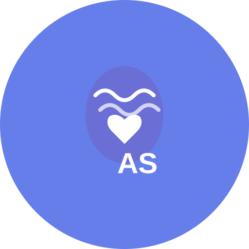

✅ Novo Favicon "PS" Criado!
Favicon com as letras PS em estilo moderno e profissional.
✓ Design Atualizado
Todos os tamanhos de favicon foram atualizados com o novo design "PS".
Preview dos Tamanhos

512x512 (High Resolution)
Características
- Letras: PS em branco (bold)
- Fundo: Gradiente Verde (#198754) → Azul (#0d6efd)
- Formato: Quadrado com cantos arredondados
- Estilo: Moderno e clean
📱 Compatibilidade Total
O favicon funciona em todos os navegadores modernos (Chrome, Firefox, Safari, Edge) e dispositivos mobile.
Como Testar
- Execute a aplicação:
dotnet run --project src/ClinicaPsi.Web
- Acesse http://localhost:5000
- Veja o novo favicon na aba do navegador
- Teste em diferentes dispositivos
🚀 Deploy para Produção
Após fazer deploy para o Railway, o Google levará de 2 a 7 dias para atualizar o favicon nos resultados de busca.